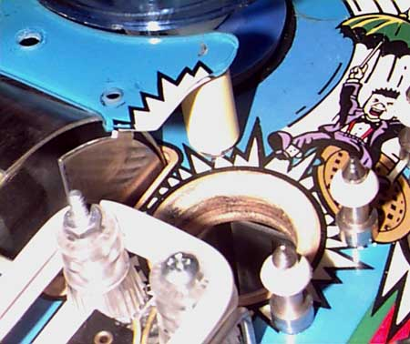

Here you can see how the welds on the back of the metal scoop to the left have broken, allowing the back of the scoop to bend upward. This eventually caused the blue plastic to break at its weakest point. (The other half of the plastic is removed so that you can see this better.)
Entire article and photographs copyright © 1998 Dan Wilga. All rights reserved. May not be reprinted without permission.